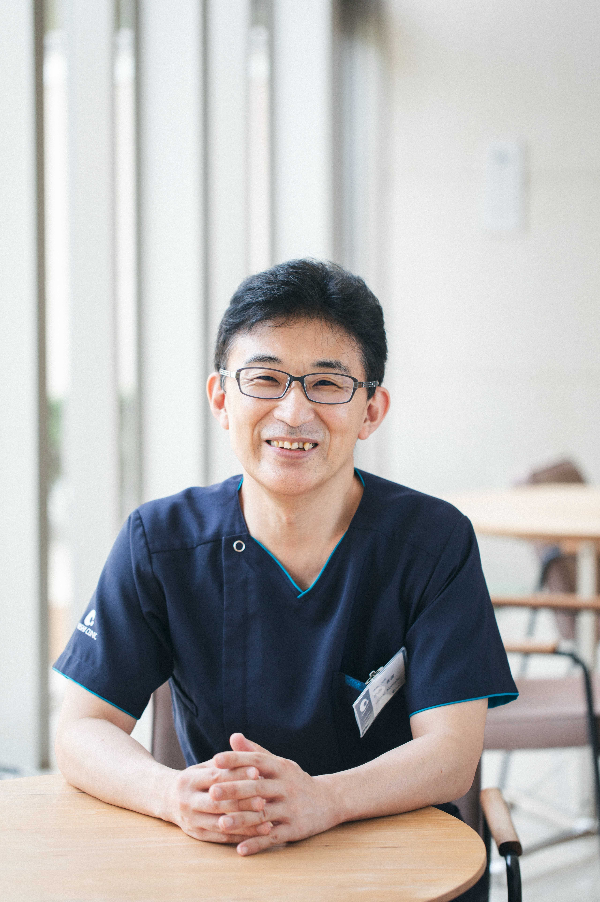
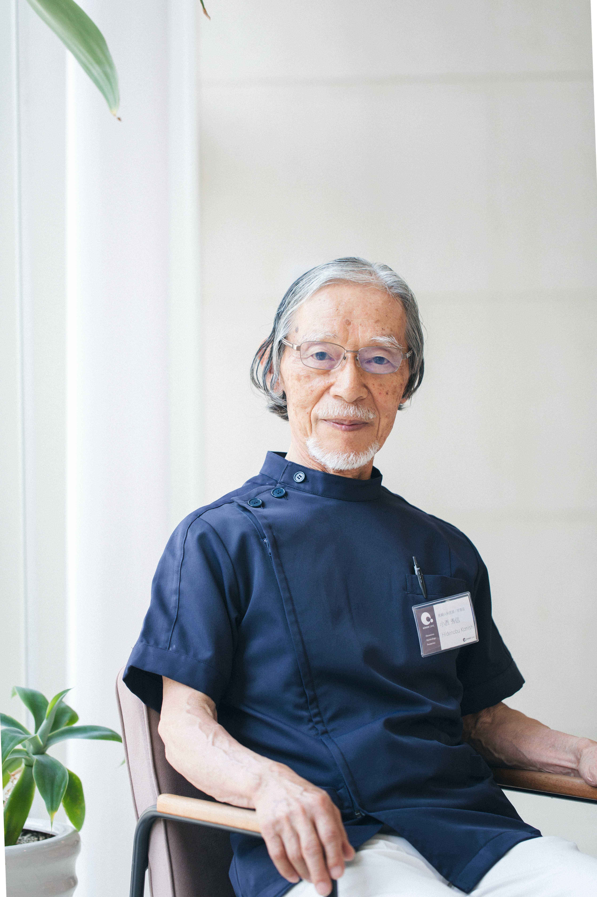

Consultation診療案内
外来診療時間・担当医表
| 診療時間 | 診察室 | 月 | 火 | 水 | 木 | 金 | 土 | 日 |
|---|---|---|---|---|---|---|---|---|
| 午前 8:30〜12:00 |
診察1 | *代診 | 院長 | 院長 | 休診 | 院長 | 院長 | 休診 |
| 診察2 (9:00〜) |
ー | 木村 | 木村 | 木村 | *木村 | *木村 | 休診 | |
| 午後 15:00〜18:00 |
診察1 | 院長 | 院長 | 院長 | 院長 | *代診 | 院長* (17:00迄) |
休診 |
| 診察2 (〜17:00) |
木村 | 木村 | 木村 | 木村 | ー | ー | 休診 |
- ＊月曜日の1診は8:30〜9:30までは院長が担当し、10:00からは代診医師が担当します。
- ＊第1、第3、第5土曜日午前の2診は木村医師が担当します。第2、第4土曜日は1診のみとなります。
- ＊土曜日午後の1診は院長または代診医となり、診療時間は17:00までとなります。
- 土曜日の受付時間は16:30までとなります。
- 不妊治療は院長のみが行っています。
- 第二、第四土曜日は初診（不妊治療、里帰り等）の受付はしておりません。
- 助産師外来は毎日対応しております。ご希望の方は事前にご連絡いただきご予約ください。
- ママの産後1ヶ月健診は随時受け付けております。
- 表とは別に不妊カウンセリング外来を行っています。ご希望の方は外来、または電話でご相談ください。
- 第二、第四土曜日は初診（不妊治療、里帰り、一時里帰り等）の受付はしておりません。
- 当クリニックは高知大学産婦人科・高知医療センター産婦人科の専門研修プログラム連携施設として登録されているため、該当施設の産婦人科医師が外来診療及び分娩を担当することがあります。
- 当クリニックでは一般名処方を行う場合があります。（後発医薬品がある医薬品について、医薬品名を指定せず薬剤の成分をもとに一般的な名称で処方箋を発行します）
*外来は予約をするようにしていますが、患者様が多い場合は待ち時間が長くなることがあります。
*痛みや、妊婦様の出血など診察に急を要する患者様を優先して診察することがありますので、診察の順番が逆になることがあります。
ご予約について
当クリニックは、予約の患者様を優先して診療いたします。
初診の方もWebからご予約が可能です。
お電話でのご予約
【受付時間】8:30〜12:00 / 15:00〜16:30
分娩・緊急の場合は時間外でもまずはお電話にてご連絡ください。
医師紹介

医師/理事長・院長
小西 秀樹 Hideki Konishi
専門領域：産科・不妊治療（体外受精・顕微授精などの高度生殖医療）
日本産科婦人科学会専門医 / 日本生殖医学会所属 / 日本受精着床学会所属 / 日本産科麻酔学会所属
平成6年 岡山大学医学部産科婦人科学教室
平成16年 医学博士号取得
平成16年 医療法人こにしクリニック勤務
医師
木村 慶子 Keiko Kimura
専門領域：産科・女性外来（生理痛、更年期、性感染症 など）
日本産科婦人科学会専門医 / 日本性感染症学会認定医 / 日本周産期・新生児医学会所属 / 日本産科麻酔学会所属
平成20年 愛媛労災病院産婦人科勤務
平成21年 宮崎大学医学部付属病院産婦人科勤務
平成27年 こにしクリニック産婦人科勤務

医師/名誉院長
小西 秀信 Hidenobu Konishi
専門領域：周産期医学
日本産科婦人科学会専門医
昭和40年 岡山大学医学部産科婦人科学教室
昭和48年 医学博士号取得
昭和49年 小西産科婦人科医院開業
スタッフ紹介
看護スタッフ (5名)
妊婦様、患者様が安心して出産や治療に専念できるよう常に心がけております。お困りのことがありましたらいつでも声をおかけください。
臨床検査技師・胚培養士 (2名)
一般検査、不妊治療（胚の培養、凍結、融解、顕微授精）などを行っています。検査結果など専門用語でわかりにくい場合はいつでもご質問ください。
補助看護師 (1名)
入院中の患者様の身の回りのお世話をさせていただいています。快適な入院生活を送っていただけるようサポートいたします。
医療事務・システム管理 (3名/1名)
初めての方でも安心して受診できるクリニックづくりを心がけております。ご相談やご質問など、お気軽にお声をおかけください。
▶︎ 施設基準 / 診療報酬改定について
基本診療料の施設基準届出
当クリニックは、以下の基本診療料の施設基準を満たし、厚生労働省に届出を行っています。
・有床診療所入院基本料1
(医師配置加算1,看護配置加算1,看護補助者配置加算1,夜間看護配置加算1,有床診療所急性期患者支援病床初期加算,夜間の緊急体制有)
・夜間・早朝等加算
・明細証発行体制等加算
・妊産婦緊急搬送入院加算
・ハイリスク妊娠管理加算
・時間外対応加算1
特掲診療料の施設基準届出
・ハイリスク妊産婦共同管理料（1）
＊当クリニックの昨年の分娩件数（2024/01~12):367件
＊連携先:愛媛労災病院（愛媛県新居浜市南小松原町13−27,TEL : 0897−33-6191)
・HPV核酸同定検査
・婦人科特定疾患治療管理料
・ハイリスク妊産婦連携指導料1
・一般不妊治療管理料
・生殖補助医療管理料1
・一般名処方加算
・外来在宅ベースアップ評価料1/入院ベースアップ評価料
・医療DX推進体制整備加算/医療情報取得加算
医療情報取得加算について
当クリニックは診療情報を取得・活用することにより質の高い医療の提供に努めております。正確な情報を取得・活用するため、マイナ保険証の利用にご協力をお願いします。
＊2024年6月1日より診療報酬の改定につき、窓口負担が変更になります。
・初診(マイナ保険証利用なし・情報提供同意なしの場合）/ 医療情報取得加算1(3点)
・初診(マイナ保険証利用あり・情報取得又は紹介状持参の場合）/ 医療情報取得加算2(3点)
・再診(マイナ保険証利用なし・情報提供同意なしの場合）/ 医療情報取得加算3(2点)
・再診(マイナ保険証利用あり・情報取得又は紹介状持参の場合）/ 医療情報取得加算4(1点)
医療DX推進体制整備加算について
当クリニックは、オンライン資格確認を行う体制を有しており、医療DXを通じて質の高い医療を提供できるよう取り組んでおります。
オンライン資格確認によって得た情報（受診歴、薬剤情報、特定健診情報等）を医師が診察室で確認できる体制を整備しており、診療に活用します。
またオンライン請求を行なっており、今後電子処方箋、電子カルテ情報共有サービスの導入も検討しております。
一般名処方加算について
後発医薬品のある医薬品について、特定の医薬品名を指定するのではなく、薬剤の成分をもとにした一般名で処方を行う場合があります。特定の医薬品が不足した場合でも、患者様に必要な医薬品が提供しやすくなります。
明細書発行体制等加算について
医療の透明化や患者様への情報提供を積極的に推進していく観点から、領収書の発行の際に個別の診療報酬の算定項目がわかる明細書を無料で発行しております。
先発医薬品（長期収載品）の選定療養について
2024年10月より、ジェネリック医薬品（後発医薬品）があるお薬で、先発医薬品の処方を希望される場合には、特別の料金のお支払いが必要となります。
例）先発医薬品が100円、後発医薬品が60円の場合、差額40円の1/4である10円を通常の患者負担（1~3割）に加えてお支払いいただきます。
詳しくは、厚生労働省のウェブサイトをご覧ください。
先発医薬品の選定療養について
差額ベッド代（室料差額）
・特別室（211）：15,000円
・洋室個室（101,201,202,203）：8,000円
・和洋室個室（205,206,207）：8,000円
※非課税/1日につき。各病室ともエアコン、冷蔵庫、TV、Wi-Fi、シャワー等完備。
身体拘束の最小化について
基本方針・・・当院では医療の提供にあたり、患者様の身体拘束は行わないこととしております。
身体拘束最小化のための体制・・・当院では身体拘束最小化に係るチームを、医師、看護師で構成し対応いたします。
適切な意思決定支援について
当院では患者様が適切な意思決定をすることができるように、専門的な情報を提供し支援をいたします。
本人の意思を最優先とし、家族、医療チームが納得ができる意思決定となることを目標とします。